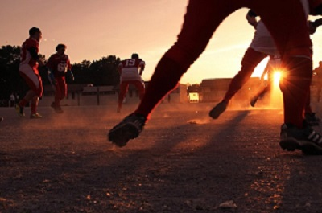

About Me

My name is Andrew Charlesorth.I live in Belize a country located in Central America.I am currently working at Heritage Bank Limited as the IT administrator.
I am 28 years old.I love what I do. IT is my world.Anything that stems from the tech world am interested in. My goal is to learn coding to my best of my ability.
I want to use coding to asssit the world in its daily struggles to keep up with the demands. Lastly I want to design a smart house with codes I created from the ground up.
Past experiences

I have been the leader of many groups in my college days.I once lead my football team to championship. It was one of the greatest moment in my life.
This is because we were able to work as team.We created strategies together to out manauever the other teams and scored more goals. This ultimately lead us to be the overall champions of the tornamment
One of my greatess accomplishment was getting a job and using that funds to purchase my first property to start my family.
Hobbies
My favorite hobby is playing football.
Another one of my favorite hobby is learning and seeking more information about Information technology.